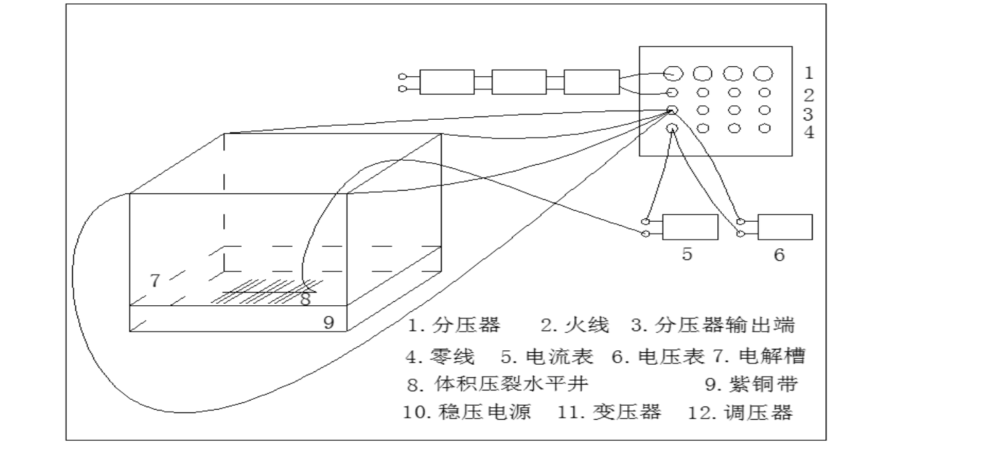
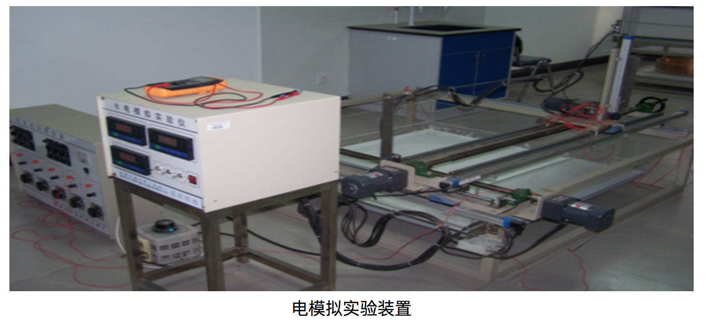
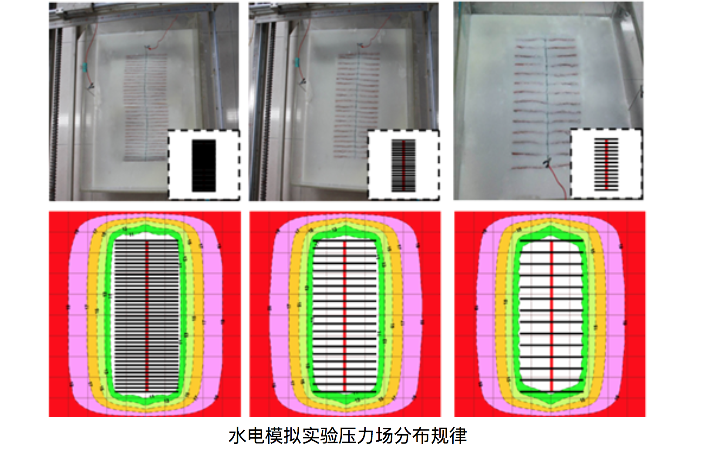
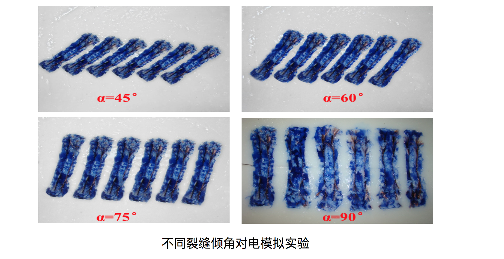

实验说明：任何物理现象都是在一定的时间和空间中进行，要使两个物理现象相似，只要满足几何相似、性质相似、物理相似、时间相似以及初始边界条件相似五个条件。根据相似三定理，结合水电相似理论，用导电介质模拟地层，在介质上施加一定电势差产生的恒定电流场来模拟地层中的稳定渗流场。在电压作用下电流的流动规律与油层压差作用下流体的渗流规律完全相同，二者之间存在相似关系。因此，在满足相似条件的情况下，稳定电流场中的电荷运动可以模拟不可压缩流体的稳定渗流问题。
实验步骤：
- 1. 配置电解质溶液和各装置：用电解槽模拟油藏边界，用(C6H5O10)n溶液模拟储层，用康铜丝模拟水平井井筒，用紫铜片模拟人工压裂裂缝，用超细铜丝模拟天然裂缝，用不同导电能力的CuSO4溶液来描述不同压裂程度引起压裂改造区的基质渗透率变化。
- 2. 连接回路并调压：运用交流电子稳压器和超隔离变压器，使实验操作电压低于人体安全电压，再运用调压器，将所需的电位大小调到所需值，调压后进入模拟井或供给边界。
- 3. 测量数据：测量装置由探针控制系统和高精度多功能万用表构成，通过移动水平和垂直方向的手柄，探针在恒定电流场中可以做三维运动。因此可以测得恒定电流场中三维空间各点的势分布。



